Hector 3.0 Web
OOTP analyzer — All scoring runs in your browser. Upload OOTP HTML exports.
How to export from OOTP
Important: After Write report to disk, wait until the HTML page has fully finished loading in your browser before you Save as / upload. Large lists can take a while — if you save too early, players at the bottom will be missing from Hector.
Player List (required)
Create a custom Player List view with the columns below, then export to disk as HTML (StatsPlus / in-game HTML export). Column order can vary — Hector matches by header name.
-
League menu → Transactions
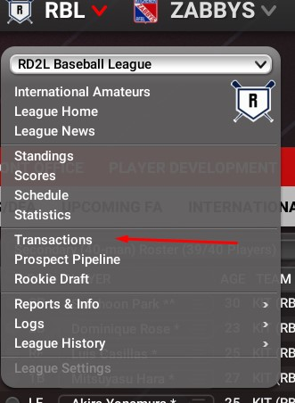
-
Players → Player List — include minor leaguers and free agents as shown (retirees / international complex off unless you need them).
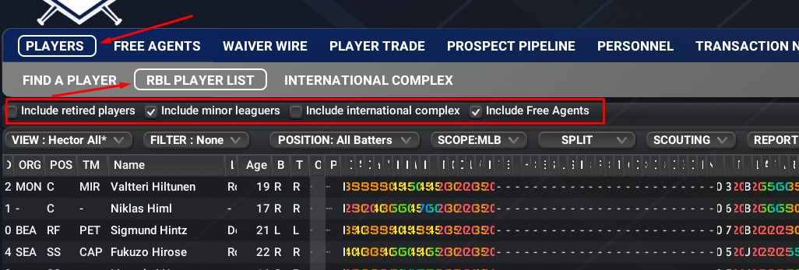
-
VIEW → Customize… to build the Hector export view.
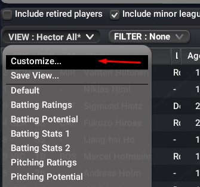
-
GENERAL — identity columns (ORG, POS, Name, Age, Bats/Throws, OVR/POT, Injury Prone, National / Local Popularity, Personality Type, etc.).

-
BATTING RATINGS — Contact, Gap, Power, Eye, K’s and potentials.
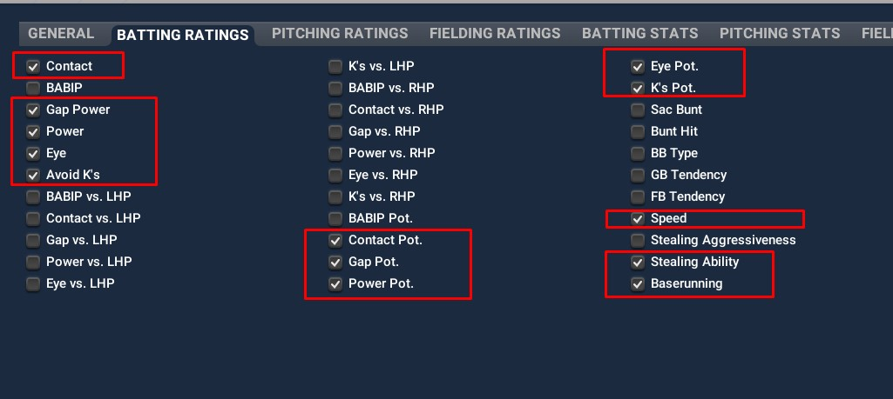
-
PITCHING RATINGS — Stuff / Movement / Control, arsenal grades + potentials, Pitches, Velocity, Stamina, Ground/Fly, Hold.
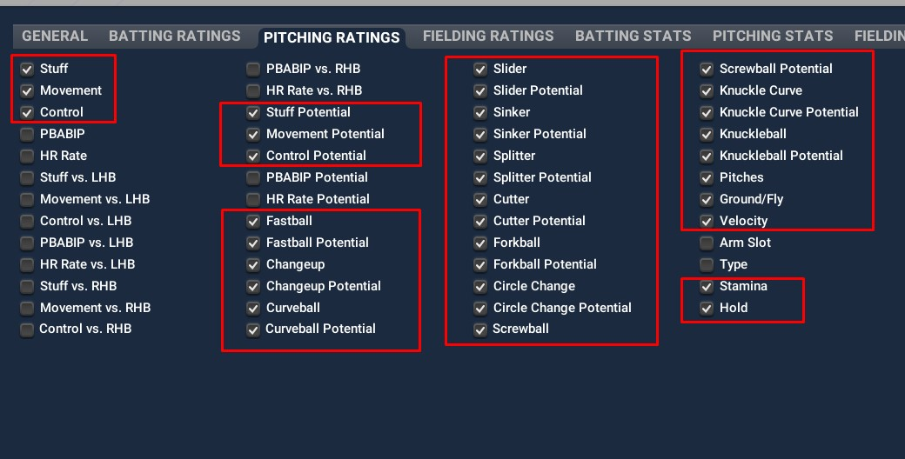
-
FIELDING RATINGS — catcher / infield / outfield tools and position fielding grades.
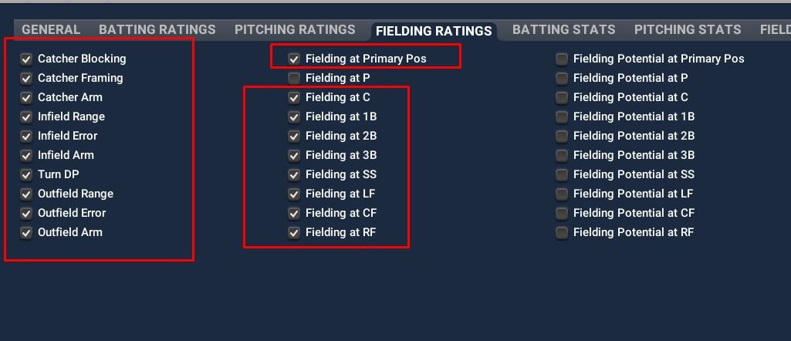
-
BATTING STATS — G, rate stats, wRC+, WAR, etc.
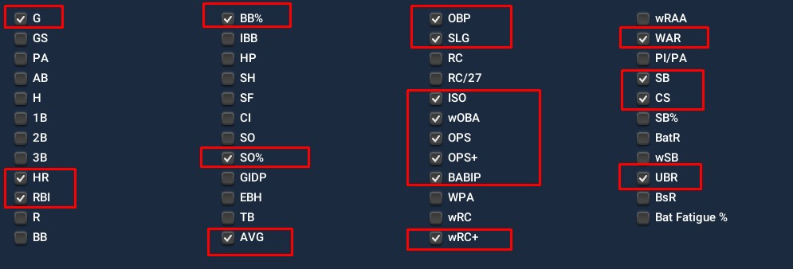
-
PITCHING STATS — IP, ERA+, FIP, WAR, rWAR, HLD/SV, etc.
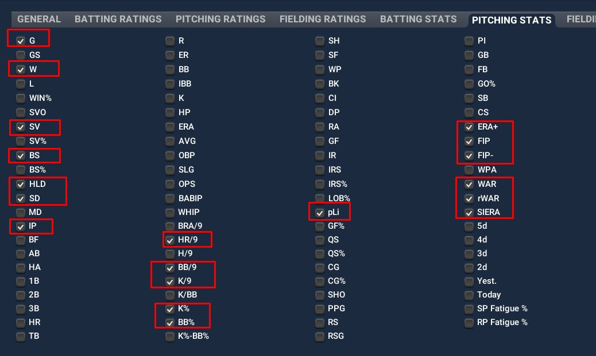
-
FIELDING STATS — at least E, ZR, and CERA.
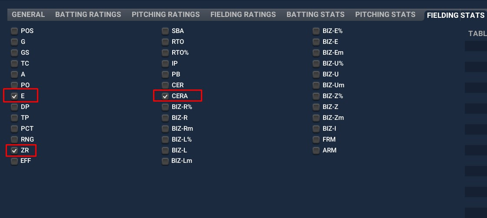
-
MISC. INFO — Salary / years / contract value fields and Scout Acc.
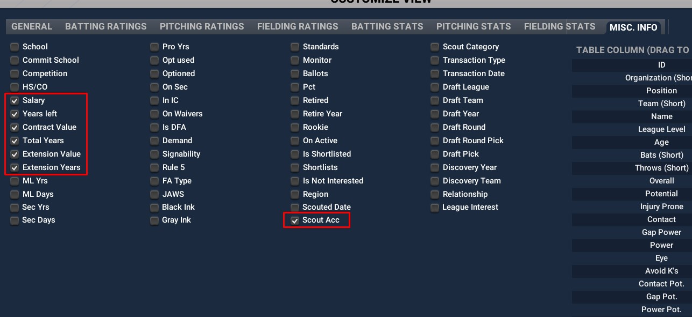
-
VIEW → Save View… so you can reuse this column set next time.
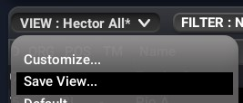
-
Name the view (e.g. Hector All) and click Save as Global.
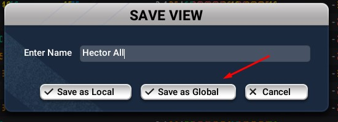
-
REPORT → Write report to disk to open the HTML export in your browser.
Wait for the page to finish loading completely before the next step — otherwise the saved file can be missing players.
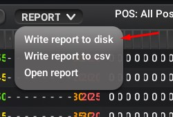
-
Once loading is done, right-click → Save as…
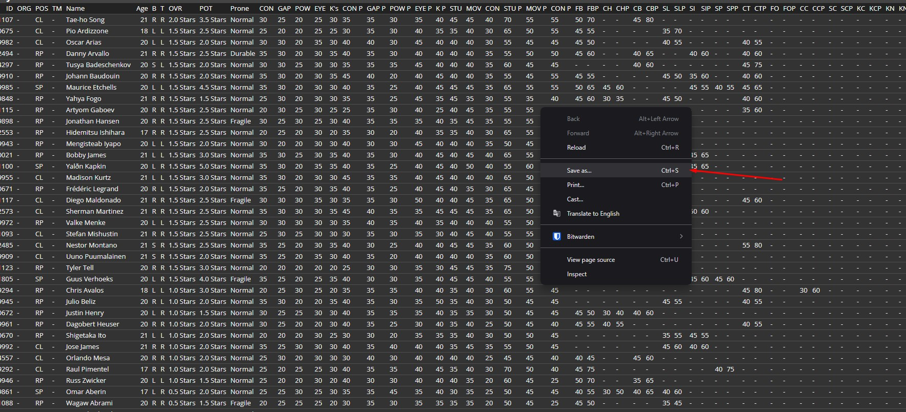
-
Save as
Player List.html(Webpage, Complete / HTML) — then upload that file above.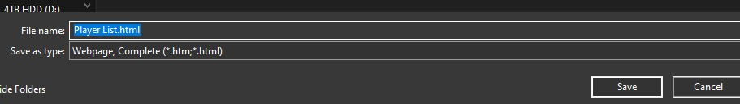
Required columns (checklist)
These are the finalized table columns from Customize View (names as shown in OOTP). After export, the dropzone above reports how many Hector-expected fields were found.
Draft Class (optional)
Same columns as Player List — reuse the Hector All view you already saved (no need to rebuild Customize View). Export the draft pool as HTML for the Draft tab (potential-heavy scoring: potential ×1.5, current ×0.9).
-
League menu → Rookie Draft
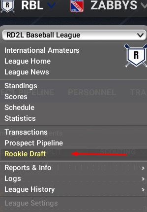
-
Open the DRAFT POOL tab.
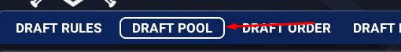
-
VIEW → Hector All (or whatever you named the Player List view) — same columns, no re-customize needed.
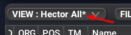
-
REPORT → Write report to disk to open the HTML in your browser.
Wait for the page to finish loading completely before Save as — otherwise the draft file can be missing players.
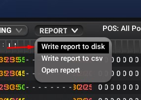
-
Once loading is done, right-click → Save as…
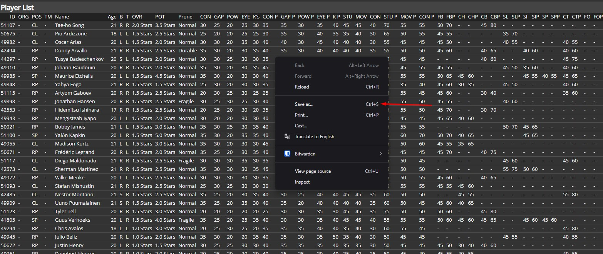
-
Save as
Draft List.html(Webpage, Complete / HTML) — then upload that file in Draft Class above.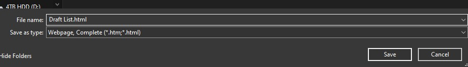
Team List (optional)
Standings + park factors for Teams and League Analysis (join on Abbr ↔ player ORG). Talent / WAR on League Analysis still comes from the Player List, not Team List WAR columns.
-
League menu → Statistics
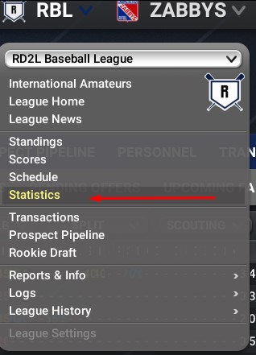
-
TEAM STATISTICS & INFO → SORTABLE STATS
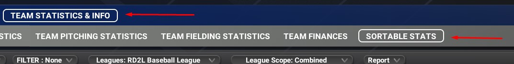
-
VIEW → Customize… (save as e.g. hector team stats when done).
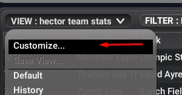
-
GENERAL — Team Name, Abbr, Park, League, Sub-League, Division, Nation.
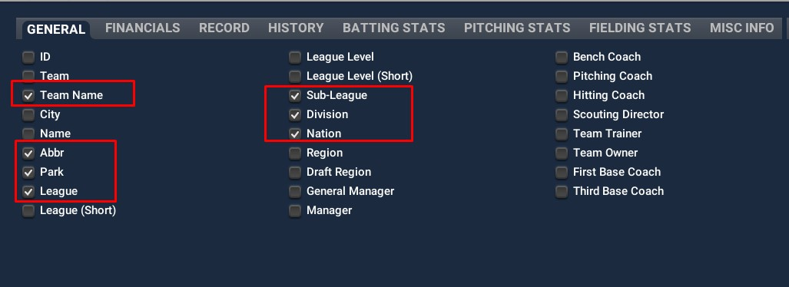
-
RECORD — Games, Wins, Losses, PCT, Streak, Magic, POS, GB, Clinch.
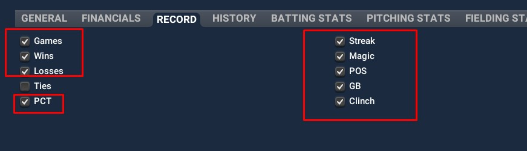
-
HISTORY — Last Wins, Last Losses, Last PCT (exports as lyW / lyL / ly%).
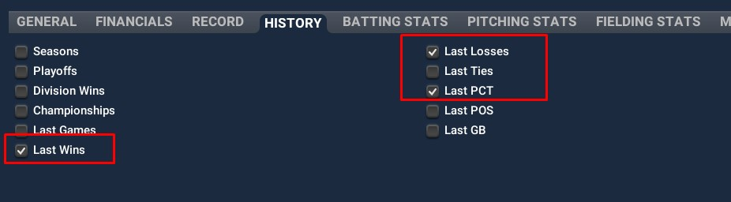
-
MISC INFO — park factors: PF, PF AVG, AVG L/R, PF HR, HR L/R, PF D, PF T.
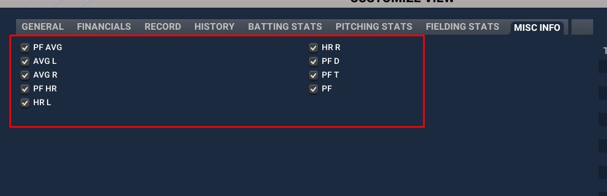
-
VIEW → Save View… so you can reuse this team stats view next time.
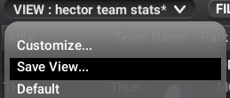
-
Name the view (e.g. hector team stats) and click Save as Global.
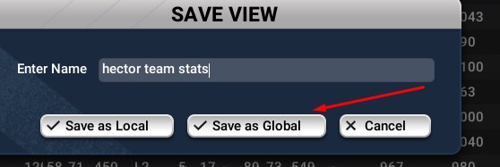
-
Report → Write report to disk to open the HTML in your browser.
Wait for the page to finish loading completely before Save as — otherwise clubs can be missing from the file.
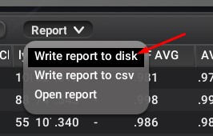
-
Once loading is done, right-click → Save as… and save as
Team List.html(Webpage, Complete / HTML) — then upload that file above.
Expected Team List columns
- Data stays in this browser (IndexedDB / localStorage) — no server upload.
- See the Glossary for every Hector-created score.